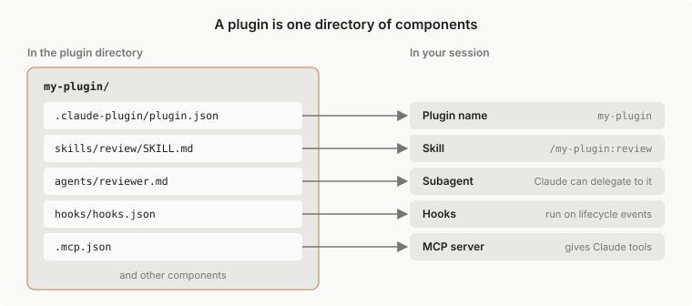
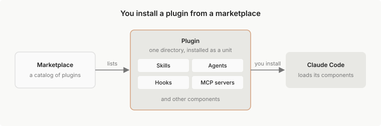

插件概览
了解什么是 Claude Code 插件，何时需要使用插件而不是独立的 skill 或 MCP 服务器，以及应该阅读哪个页面来安装或创建插件。
Claude Code 插件是一个目录，包含 skills、agents、hooks、MCP 服务器或其他组件，Claude Code 将其作为一个单元进行安装和加载。大多数插件来自市场，市场是一个目录，列出了插件及其获取位置。您也可以从某人提供给您的文件夹中加载插件，或者构建您自己的插件。
以下情况在其他页面中介绍：
- 您使用 claude.ai 聊天或 Cowork，而不是 Claude Code：请参阅 claude.ai 和 Cowork 中的插件
- 您构建了 MCP 服务器并希望将其添加到 Anthropic 的目录中：请参阅发布到目录
- 您希望在 VS Code 或 JetBrains IDE 中使用 Claude Code：那是 VS Code 扩展或 JetBrains 插件，而不是 Claude Code 插件。请参阅在 VS Code 中使用 Claude Code 或 JetBrains IDE
要立即尝试插件，请在 Claude Code 终端会话中运行 /plugin，并从发现选项卡安装一个插件，该选项卡列出了来自您的市场的插件。从那里：
了解什么是插件
插件是一个组件目录，通常带有清单。清单是位于 .claude-plugin/plugin.json 的 JSON 文件，它给插件命名，并可以添加版本、描述和其他元数据。这些组件是插件添加到 Claude Code 的内容，例如：
- Skills：
SKILL.md指令，Claude 在相关时加载，您也可以作为命令运行 - Agents：Claude 可以委派给的子代理定义
- Hooks：Claude Code 在其生命周期中的特定点运行的命令，例如每次编辑后
- 一个 hook 模块：作为 JavaScript 函数编写的 hook，也可以绘制窗格和添加命令。拥有 hook 模块的插件称为 mod。部分 mod 内置于 Claude Code。
- MCP 服务器：工具服务器，Claude Code 在启用插件时连接到
此图显示了一个名为 my-plugin 的插件，其中包含一个 skill、一个 agent、hooks 和一个 MCP 服务器，以及插件加载后您从每个文件获得的内容。

对于插件可以包含的每种组件类型，以及每种的示例，请参阅插件组件。要查看每个部分在插件目录中的位置，请使用该页面上的插件浏览器。
决定您是否需要插件
Skills、子代理、hooks 和 MCP 服务器都可以独立工作，无需插件。例如，您在 ~/.claude/skills/ 中保存的 skill 在您计算机上的每个项目中都可用。要单独设置其中一个，请参阅 Skills、Subagents、Hooks 或 MCP。
当您想将多个 skills、子代理、hooks 或 MCP 服务器打包为一个单元时，请使用插件。安装一个以获得某人构建的设置，只需一个命令和来自其市场的更新。创建一个以将您自己的设置提供给团队成员，在许多项目中安装它，或发布版本化的发布版本。
启用的插件为您的会话添加的内容
启用的插件是每个会话的一部分，而不仅仅是您使用它的会话。这有几个后果值得在安装之前了解：
- 上下文和使用情况：对于每个 skill、agent 和 Claude 可以自行调用的命令，名称和描述在每个回合都在 Claude 的上下文中，以便 Claude 知道它存在。这些令牌计入您的使用情况，并在上下文窗口中留下更少的空间，即使在插件中没有任何内容运行的会话中也是如此。skill 或 agent 的完整文本仅在使用时加载。插件的 MCP 服务器每个回合添加的内容遵循 MCP 工具搜索。
- 进程：插件定义的 MCP 服务器在启用它的每个会话旁边运行，其 hooks 在其事件处触发。
- 权限：插件运行的内容以您的身份运行。有关首先要审查的内容，请参阅插件安全和信任。
您可以在每个阶段检查插件的占用空间：
- 安装前：从
/plugin中的市场选项卡打开插件。Anthropic 官方市场中的插件在那里显示上下文成本估计。 - 安装后：测量插件成本显示如何读取插件的占用空间，已安装选项卡的最近未使用组列出了您可以关闭的插件。
- 在不卸载的情况下停止它：使用
/plugin禁用插件，或在您的 shell 中使用claude plugin disable。请参阅管理已安装的插件。
从市场获取插件
市场是一个存储库或目录，具有 .claude-plugin/marketplace.json 文件，该文件列出插件及其获取位置。它是一个目录，而不是托管的商店。您添加一次市场，然后按名称从中安装插件，例如 commit-commands@claude-plugins-official。
插件市场不是 Claude Marketplace。Claude Marketplace 是 claude.com/marketplace 上的网站，您可以在其中浏览插件、连接器、合作伙伴产品和服务合作伙伴。它不是您使用 /plugin marketplace add 添加的市场。
Claude Code 在您第一次启动交互式终端会话时添加 Anthropic 的官方市场，除非托管策略阻止它。Claude Code 不会自行添加 Anthropic 的社区市场。要区分 Anthropic 的各个市场，请阅读 Anthropic 的市场。要查看官方市场列出的内容，请在会话中打开 /plugin 的发现选项卡，或浏览 Claude Marketplace。
此图显示了从市场到您的会话的路径。市场列出一个插件，您安装该插件，Claude Code 加载其组件。

安装和管理插件有您运行 Claude Code 的每个位置的安装步骤。在您开发插件时，您不需要市场：使用 --plugin-dir 直接从其文件夹加载它，如在没有市场的情况下开发所示。
在您的会话中使您安装的插件可用
在您安装的插件为您提供可以运行的 skill 之前，它必须存在于以下每个层中：
- 设置：您的设置列出您添加的市场和启用的插件。
- 磁盘：
~/.claude/plugins/保存 Claude Code 已获取和安装的内容。 - 会话：插件在启动时加载，或当您重新加载插件时加载。
阅读插件加载参考了解每个层的规则，包括哪个设置文件优先以及文件在磁盘上的位置。
区分 Anthropic 的市场和第三方市场
市场的名称将其放在三个层级之一中。Claude Code 仅接受来自 github.com/anthropics/ 存储库的官方和社区名称：
- 官方：具有 Anthropic 官方市场名称之一的市场，包括
claude-plugins-official和claude-code-plugins。 - 社区：具有 Anthropic 社区名称之一的市场，例如
claude-community。按名称识别 Anthropic 的市场列出了它们。 - 第三方：所有其他市场。您的同事或您的组织发布的市场是第三方。
无论层级如何，您安装的插件都可以使用您的用户权限运行代码。阅读插件安全和信任了解如何在安装插件之前审查它。
通过托管设置，组织可以允许列表或阻止市场、强制安装插件并关闭仅会话加载。阅读为您的组织管理插件了解这些控制。
了解安装作用域
当您安装插件时，您选择一个作用域，作用域决定谁启用了该插件：
- 用户作用域：在此计算机上的每个项目中为您启用
- 项目作用域：通过提交的
.claude/settings.json为在此存储库中工作的每个人启用。每个协作者仍然在自己的计算机上安装它 - 本地作用域：仅在此存储库中为您启用
您在终端、桌面应用的本地会话或 VS Code 扩展中以用户作用域安装的插件在该计算机上的其他两个中可用，因为所有三个都读取相同的设置文件。有关如何选择一个的信息，请参阅选择安装作用域。
云会话（包括浏览器中 claude.ai/code 中的会话）不加载本地设置中的插件。有关终端、VS Code 和桌面应用中的安装步骤，以及云会话加载的内容，请参阅安装插件。
相同的插件格式也在 claude.ai 和 Cowork 上安装，其中加载了不同的组件集。对于这些界面，请参阅 claude.com 上的 claude.ai 和 Cowork 中的插件 及其按应用比较组件支持表。
后续步骤
大多数人首先从 Anthropic 的官方市场安装插件，Claude Code 在您第一次启动交互式终端会话时添加该市场。在终端会话中运行 /plugin 来浏览它，或按照安装和管理插件，其中也涵盖了桌面应用和 VS Code。要在打开 Claude Code 之前查看该市场中的内容，请在网络上浏览 Claude Marketplace。
要构建您自己的，创建插件从空目录开始，以工作插件结束。
安装或构建插件后，这些页面涵盖接下来的内容：
- 分享您构建的内容：发布和分发插件，通过您自己的市场或 Anthropic 的目录
- 检查它是否有效和被使用：使用 evals 测试插件和测量插件成本和使用情况
- 为您的团队运行市场：创建市场，然后托管和维护市场
- 为组织设置插件策略：为您的组织管理插件
- 修复问题：插件故障排除